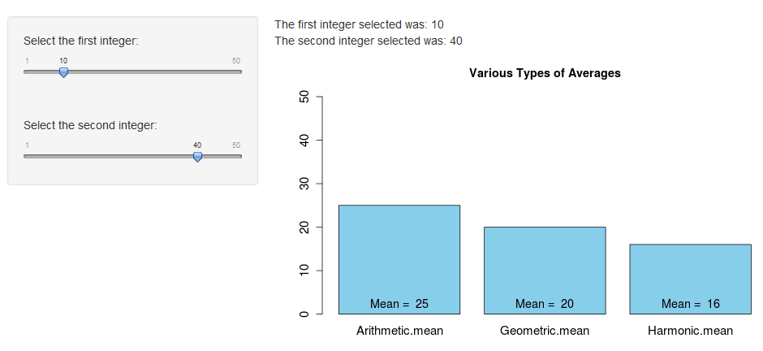

Given two numbers 'x' and 'y', there are at least three different ways to compute their mean.
The means we can explore in this application are as follows:
- Arithmetic mean: (x+y) / 2
- Geometric mean: sqrt(x*y)
- Harmonic mean: 2 / [1/x + 1/y]
created by hotnow
Given two numbers 'x' and 'y', there are at least three different ways to compute their mean.
The means we can explore in this application are as follows:
Suppose x = 10 and y = 40, then we have the following:
x <- 10
y <- 40
paste("Arithmetic mean = ", (x + y)/2)
## [1] "Arithmetic mean = 25"
paste("Geometric mean = ", sqrt(x * y))
## [1] "Geometric mean = 20"
paste("Harmonic mean = ", 2/(1/x + 1/y))
## [1] "Harmonic mean = 16"
Of the three types of averages included in the application, which one is always at least as small as the other two?
That's not correct. Please make a different choice.
The arithmetic mean is at least as large as the other two, while the harmonic mean is always the smallest or tied for the smallest.
